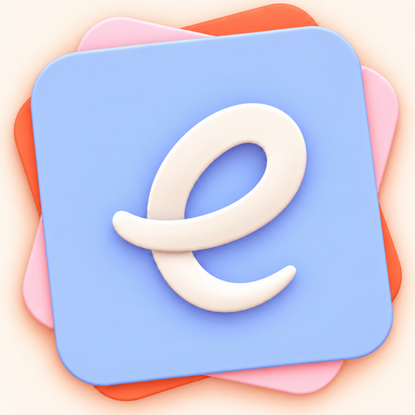

e‑Devlet e‑İmza
İşlem kodu algılama, desteklenen kart profilini okuma ve imzalı veriyi resmî servise gönderme akışı uygulama tarafından yürütülür.

e‑İmza KartlarDestek merkeziKart okuyucu, sertifika, PIN veya portal akışında sorun yaşıyorsanız aşağıdaki kontrollere sırayla ilerleyin.
Simülatör kart okuyucuyu göremez. Donanım testini uygulamanın TestFlight veya App Store sürümüyle fiziksel iPhone üzerinde yapın.
CCID uyumlu okuyucuyu uygun USB‑C veya Lightning adaptörüyle iPhone’a takın.
Kartın okuyucuya tam oturduğundan emin olun; gerekiyorsa okuyucuyu çıkarıp yeniden takın.
Uygulamadaki test kartından okuyucu, kart profili ve sertifika sonucunu kontrol edin.
Donanım testi hazır durumuna gelmeden gerçek bir giriş veya imza akışına başlamayın.
PIN güvenliği: PIN’inizi ekran görüntüsüne, destek talebine veya başka bir kişiye yazmayın. Yanlış denemeler kartınızın kilitlenmesine yol açabilir.
e‑Devlet Elektronik İmza sayfası uygulama içinde açılır. İşlem kodu oluştuktan sonra uygulama desteklenen kart profiliyle imzalama adımını başlatır.
Resmî e‑Devlet ekranında gerekli bilgileri girin.
Oluşan işlem kodunun uygulama tarafından algılanmasını bekleyin.
Gösterilen kart ve sertifika bilgisini kontrol edin.
PIN’i yalnızca uygulamadaki güvenli kart alanına girip imzayı tamamlayın.
PIN geliştiriciye veya e‑Devlet’e gönderilmez; doğrudan bağlı akıllı kartın doğrulama komutuna iletilir. İşlem kodu ve imzalı veri, girişin tamamlanması için resmî e‑Devlet hizmetine gönderilir.
Uygulama portal erişimini tek yerde toplar; fakat resmî kurumların kendi giriş yöntemi, cihaz desteği ve hizmet sürekliliği ilgili kuruma aittir.
İşlem kodu algılama, desteklenen kart profilini okuma ve imzalı veriyi resmî servise gönderme akışı uygulama tarafından yürütülür.
Uygulama ilgili HTTPS giriş sayfasını açar. Web sayfasının kartı doğrudan tanıması, portalın iOS ve kart okuyucu desteğine bağlıdır.
UYAP sayfasındaki “Cihaz seçiniz” alanı boşsa yalnızca sayfayı yenilemek yeterli olmayabilir. Önce uygulamadaki kart testini doğrulayın; resmî portal iOS üzerinden cihaz erişimini desteklemiyorsa uygulama bunu web sayfası adına aşamaz.
Fiziksel iPhone kullandığınızı, adaptörün veri aktarımını desteklediğini ve okuyucunun CCID uyumlu olduğunu kontrol edin.
Kart algılanıp profil eşleşmiyorsa ATR bilgisini PIN içermeden destek talebine ekleyin. Her kart işletim sistemi aynı değildir.
Kartın doğru yönde takıldığını ve nitelikli elektronik sertifikanın geçerli olduğunu sağlayıcınızın araçlarıyla doğrulayın.
İnternet bağlantısını kontrol edin, sayfayı yenileyin ve resmî hizmette bakım veya kesinti olup olmadığını inceleyin.
Hayır. PIN, işlem sırasında bellekte tutulur, doğrudan akıllı karta iletilir ve geliştirici tarafından işletilen bir sunucuya gönderilmez. PIN’i destek talebinde paylaşmayın.
Mevcut sürüm test edilmiş KamuSM/AKİS ile belirli ArkSigner/Arkİmza profillerini tanır. Aynı sağlayıcının farklı kart işletim sistemleri farklı davranabilir; uygulamadaki E‑İmza Test Merkezi en güvenilir kontroldür.
Arayüz akışını görebilirsiniz ancak gerçek USB/CCID okuyucu ve akıllı kart imzası için fiziksel iPhone gerekir.
Hayır. Uygulama içindeki geliştiriciye destek seçenekleri isteğe bağlı, tüketilebilir satın alımlardır; herhangi bir özellik veya içerik açmaz.
Hayır. e‑İmza Kartlar bağımsız bir uygulamadır; UYAP, e‑Devlet, PTT, Sağlık Bakanlığı veya diğer kurumlarla bağlı, onaylı ya da sponsorlu değildir.
iOS sürümü, uygulama build numarası, okuyucu modeli, kart sağlayıcısı ve ekrandaki hata metnini ekleyin. T.C. kimlik numarası, sertifika içeriği veya PIN paylaşmayın.
GitHub Pages yayını algılandığında sorun bildirme bağlantısı otomatik oluşur.